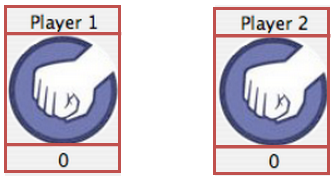
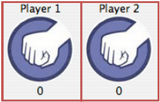
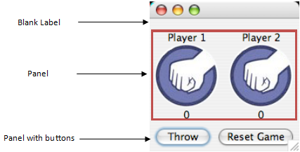

Getting the layout for Rock-Paper-Scissors can be tricky because it involves putting SPanels on other SPanels. Here's a breakdown of how to do it.
Start with two different BorderLayout panels. Each with three labels on them.

Add those two panels to another GridLayout panel

This is the panel that will go in the center of your frame (which is a BorderLayout). You will also need to create another panel with buttons for the south. There should be a label on the north of the frame, but it should start with only a space as its text " ".
